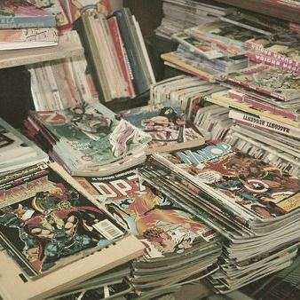
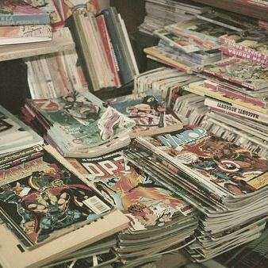

Com certeza uma das coisas que eu mais sou viciada são animes. As historias são tão apaoixonantes, e você consegue entrar no mundo sem esforço algum.
Sem contar as diversas vezes que você vai se apaixonar, se irritar e chorar por diversos personagens. Eu listari aqui meus favoritos, mas não saberia
escolher.
Não que eu seja uma pessoa que leia muito mas não vou dizer que não tenha uma paixão pela leitura. Assim como os animes, você entra no mundo da
fantasia junto com as personagens. Vive as aventuras junto com elas, enfim é algo que eu gosto bastante. Diria que prefiro mais livros em sagas como:
Harry Potter, Senhor dos anéis, Hobbit, A seleção, Percy Jackson, entre outros.
Essa categoria ta voltada pra parte mais geek, para os fãs de DC e Marvel assim como eu. Não diria que gostar disso seria igual as outras duas
categorias, mas você também se apaixona e entra na história junto com as personagens. É algo que em todo o caso eu gosto, gosto de me sentir parte
daquela aventura, me sentir parte do "grupo" das personagens, é divertido.